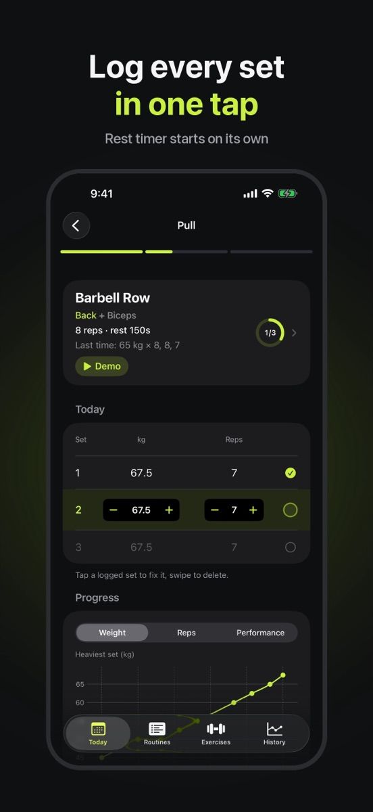
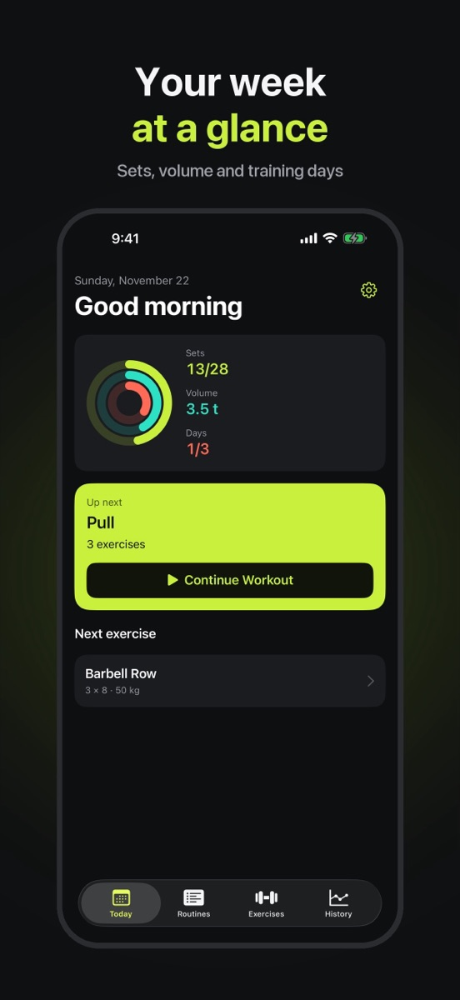
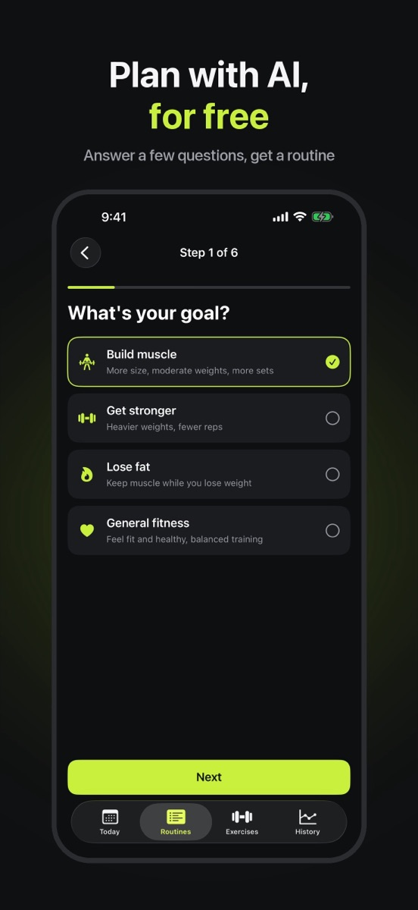
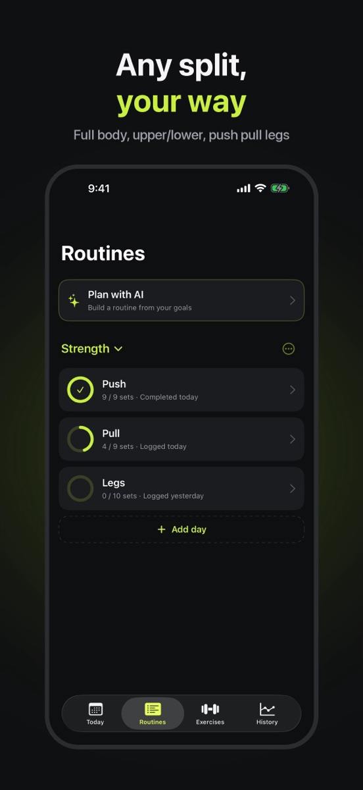
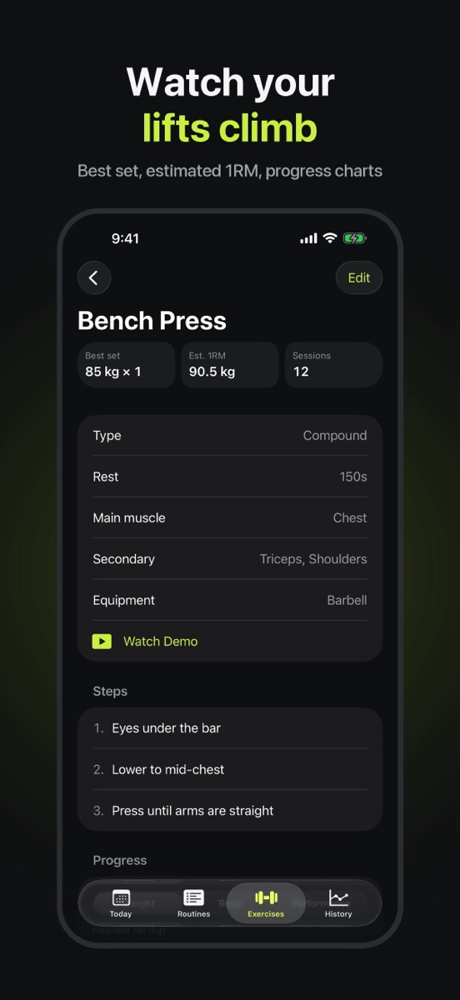
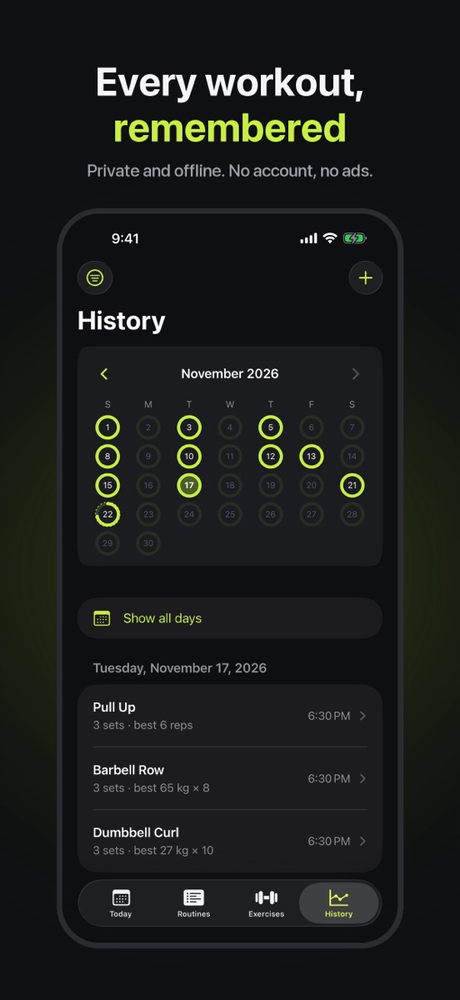

Fitness Planner: workout tracker & gym log
Fitness Planner is a free iPhone app for strength training. Plan your weekly routine, log every set with weight and reps, rest with an automatic timer and watch your lifts climb. No account, no ads, works offline.
View on the App StoreFor iPhone, iOS 17 or later. Free.
Screenshots






Who it's for
- Lifters following a training split: full body, upper/lower or push pull legs
- Beginners who want a simple plan to start with
- Anyone who wants a private, offline weightlifting log
Features
Plan your week
Build plans of training days with your own exercises, sets, rep ranges and weights, or start with a ready-made 3-day full-body plan.
Plan with AI
Answer a few questions, paste the prompt into any AI chat app, and paste the reply back to create your routines. See how.
Log set by set
Quick weight and rep controls with last session's numbers pre-filled.
Rest timer on the Lock Screen
150 s for compound lifts, 75 s for isolation. The countdown, current set and next exercise show on the Lock Screen and in the Dynamic Island.
Track progress
Weekly sets, volume and days, a training calendar, and charts for heaviest weight, best reps and estimated 1RM.
Private by design
Your workouts stay on your iPhone. No account, no ads, no tracking.
How to use Plan with AI
You don't need to know anything about AI. The app does the writing; you just carry a message to an AI chat app (like ChatGPT, Claude or Gemini) and bring its answer back.
Answer the questions
In Fitness Planner, open Plan with AI and pick your goal, days per week and equipment.
Copy the message
The app writes a message for the AI. Tap the copy button.
Paste it into an AI chat app
Open your AI chat app, tap the message box, choose Paste and send it.
Wait for the full answer
The AI types its answer bit by bit. Wait until it stops completely, usually 10–30 seconds. Don't copy it halfway.
Copy the whole answer
Tap the AI's copy button under its answer (it looks like two small squares). This copies the entire reply.
Paste it back into Fitness Planner
Return to Fitness Planner and tap paste. Your routines and exercises are created.
The answer looks like code with lots of { } brackets. That's normal: it's meant for the app, not for you to read. Fitness Planner never contacts an AI service itself.
Questions
Is Fitness Planner free?
Yes. No subscription, no ads and no in-app purchases.
Does it need an account or internet?
No. There is no account and the app works offline. Your workouts are stored only on your iPhone.
How does Plan with AI work?
You answer a few questions about your goal, days per week and equipment. The app writes a prompt you paste into any AI chat app you already use; paste the reply back and your routines and exercises are created. Fitness Planner never contacts an AI service itself.
Which training splits does it support?
Any split you build: full body, upper/lower, push pull legs or your own.
Does it track progress?
Yes: weekly sets, volume and training days, a calendar of every workout, and charts for heaviest weight, best reps and estimated one-rep max (1RM).
Can I see my rest timer on the Lock Screen?
Yes. During a workout the rest countdown, current set and next exercise show on the Lock Screen and in the Dynamic Island, and an alert sounds when rest is over.
Is it good for beginners?
Yes. Load the ready-made 3-day full-body plan with light starter weights and step-by-step instructions, or let Plan with AI build a routine from your goal, experience and equipment.
Last updated November 22, 2026 (version 1.0.0). Fitness Planner does not give medical advice. Check with a professional before starting a new training program.